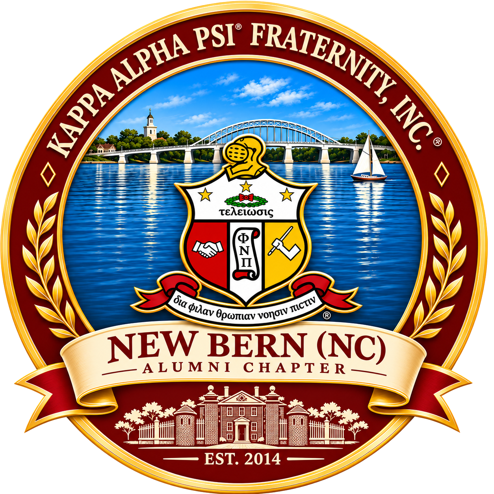

Welcome
Achievement in New Bern
Welcome to the New Bern (NC) Alumni Chapter of Kappa Alpha Psi Fraternity, Inc. We are committed to achievement, brotherhood, service, and making a positive difference in our community.

ALUMNI CHAPTER
Welcome to the New Bern (NC) Alumni Chapter of Kappa Alpha Psi Fraternity, Inc. We are committed to achievement, brotherhood, service, and making a positive difference in our community.
Learn more about our chapter initiatives, youth development, community partnerships, and service throughout the New Bern area.
Chapter events and community activities will be featured here. Check back for the latest dates and details.
Explore the chapter lineage and the brothers whose leadership and commitment have helped shape the New Bern (NC) Alumni Chapter. Chapter lineage details can be added here.
Photos from chapter events, community service, and brotherhood activities will be added here.
Chapter announcements, highlights, and news will appear here.
For chapter information, community partnerships, or event inquiries, please contact the New Bern (NC) Alumni Chapter.